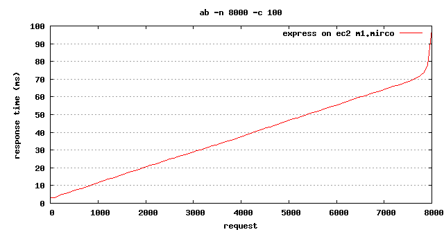
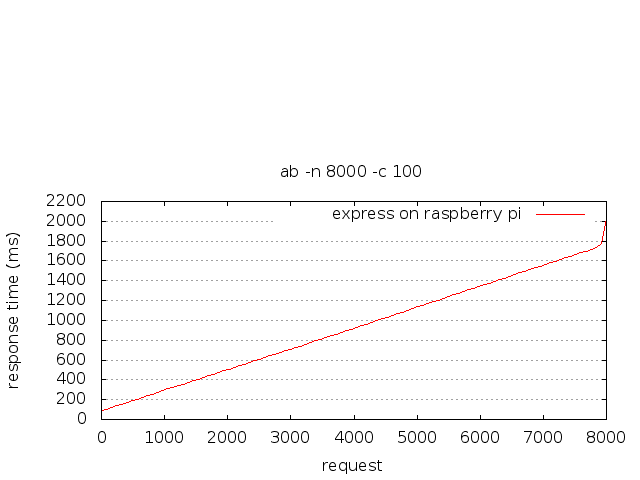
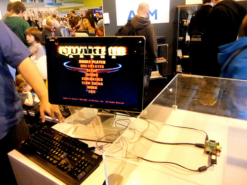

Node on Raspberry Pi
Topics
- What is Raspberry Pi
- What is it made of
- Installing Node
- Benchmarks
What is Raspberry Pi
The Raspberry Pi is a credit-card-size single-board computer developed in the UK by the Raspberry Pi foundation with the intention of stimulating the teaching of basic computer science in schools.
Thank you Wikipedia
Model B

| Model A | Model B |
|---|---|
|
|
OS Install
- Raspbian "wheezy"
- Soft-float Debian "wheezy"
- Arch Linux
- RISC OS
Installing Node
$ wget http://nodejs.org/dist/v0.8.16/node-v0.8.16.tar.gz
$ tar -zxf node-v0.8.16.tar.gz
$ cd node-v0.8.16
$ ./configure
$ make
# two hours later...
$ sudo make install
Benchmarks
Using:
- Benchmark.js(benchmarkjs.com)
- Express.js(expressjs.com)
On:
- Ec2 T1.Micro Instance
- Raspberry Pi Model B
t1.Micro
- MemTotal: 615664 kB
- Intel Xeon CPU @ 2.66GHz
Benchmark.js
var Benchmark = require('benchmark').Benchmark;
var suite = new Benchmark.Suite;
suite.add('RegExp#test', function() {
/o/.test('Hello World!');
})
.add('String#indexOf', function() {
'Hello World!'.indexOf('o') > -1;
})
.add('FileSystem#readdir', function() {
fs.readdir('.', function(err, files){
files.size > 0;
});
})
.on('cycle', function(event) {
console.log(String(event.target));
})
.run({ 'async': true });
EC2
$ node functions.js
RegExp#test x 7,492,294 ops/sec ±1.06% (88 runs sampled)
String#indexOf x 7,358,253 ops/sec ±34.70% (54 runs sampled)
FileSystem#readdir x 13,562 ops/sec ±42.60% (25 runs sampled)
Raspberry Pi
$ node functions.js
RegExp#test x 206,382 ops/sec ±1.23% (81 runs sampled)
String#indexOf x 375,805 ops/sec ±0.45% (92 runs sampled)
Express.js
var express = require('express');
var app = express();
app.use(express.cookieParser('some secret'));
app.use(express.cookieSession());
app.use(express.bodyParser());
app.use(express.methodOverride());
app.use(app.router);
app.get('/', function(req, res) {
res.send('Hello World');
});
app.listen(3000);
console.log('Listening on port 3000');
EC2
Concurrency Level: 100
Time taken for tests: 3.064 seconds
Complete requests: 8000
Failed requests: 0
Write errors: 0
Total transferred: 2224000 bytes
HTML transferred: 88000 bytes
Requests per second: 2610.98 [#/sec] (mean)
Time per request: 38.300 [ms] (mean)
Time per request: 0.383 [ms] (mean, across all concurrent requests)
Transfer rate: 708.84 [Kbytes/sec] received
EC2
Raspberry Pi
Concurrency Level: 100
Time taken for tests: 74.481 seconds
Complete requests: 8000
Failed requests: 0
Write errors: 0
Total transferred: 2224000 bytes
HTML transferred: 88000 bytes
Requests per second: 107.41 [#/sec] (mean)
Time per request: 931.017 [ms] (mean)
Time per request: 9.310 [ms] (mean, across all concurrent requests)
Transfer rate: 29.16 [Kbytes/sec] received
Raspberry Pi
Quake?
System On a Chip (SOC)
Broadcom BCM2835- ARM1176JZFS, with floating point, running at 700Mhz
- Videocore 4 GPU, H.264 at 40MBits/s, OpenGL ES2.0 and OpenVG
- 1080p30
- Xbox 1